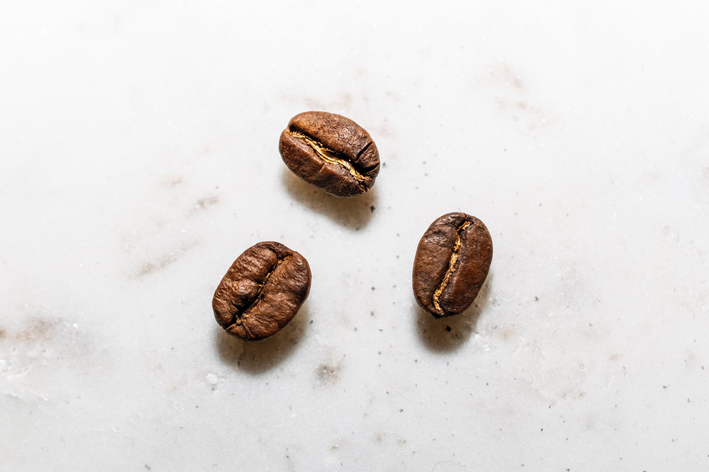

My name is Pembe, which means pink
in English.
Education;
Bayraktar Turk Maarif College,
Turk Maarif College,
University of Kent.
What's yours favourite drink?
 Benefits of Coffee
Benefits of Coffee
This coffee beans photo below is a link, click on it.
| Person 1 | Person 2 | Person 3 | Person 4 |
|---|---|---|---|
| Cortado | Espresso | Americano | Frappe |
| Spain | Italy | America | Greece |